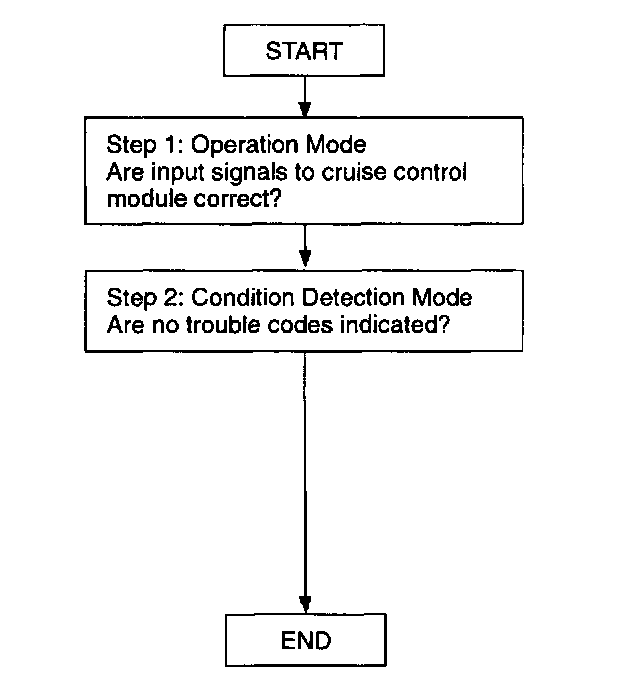

Symptom Related Diagnostic Procedures
Outline- There are two on-board diagnostic functions:
Operation Mode, which inspects for and indicates correct operation of the input signals to the control module, and Condition Detection Mode, which indicates troubles in the system
- The two functions can be done by using either of the following methods:
1. Verifying the flashing pattern of the cruise set indicator light in the instrument cluster.
2. Verifying the output of the data link connector by using the SST (NGS set).

Inspection Order